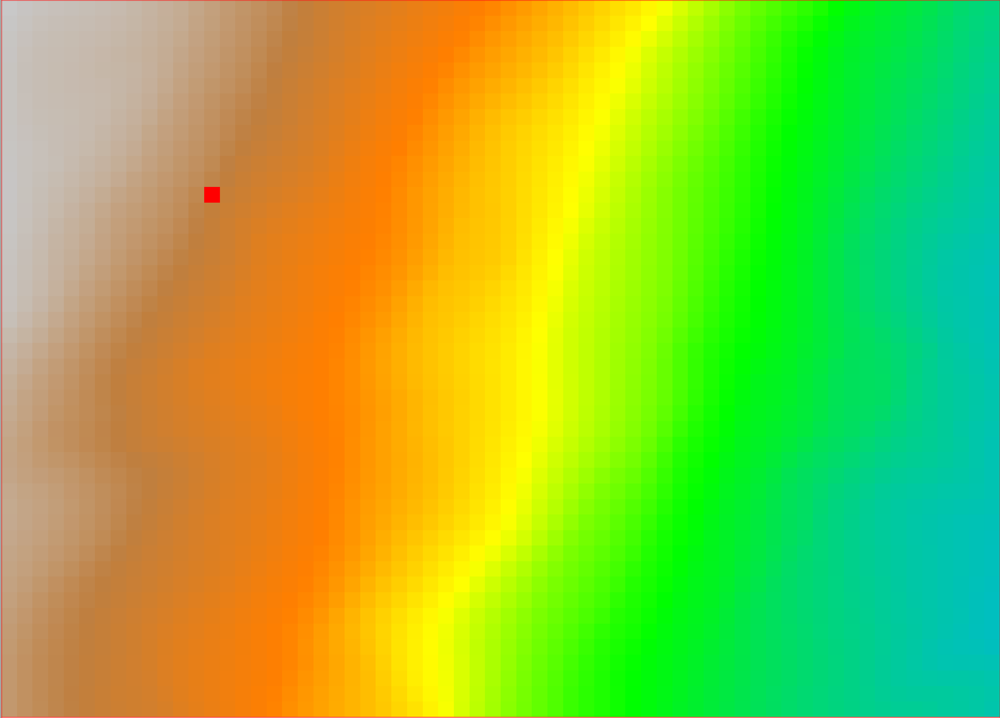
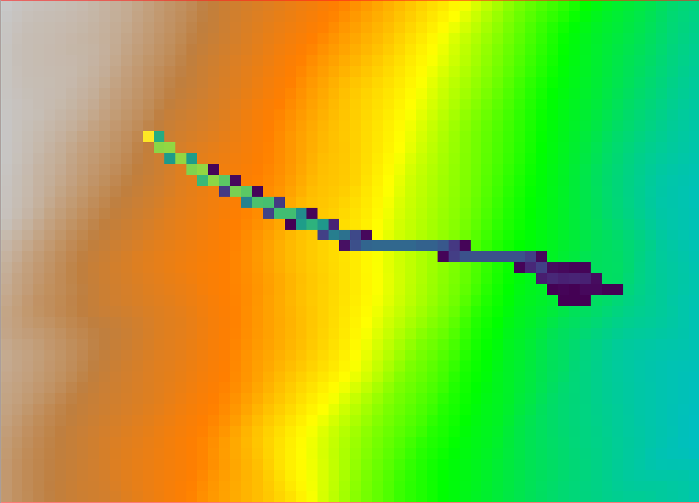

Input DTM is a square fixed spaced DTM, but it is used as a Triangular Regular Network. Triangles are built on the fly during run-time.
Paths are evaluated using parametric 2nd order equations after a roto-translation of the coordinate system to the run-time triangle.
r.stone dem_raster=dem sources_raster=sources nrest_raster=nrest trest_raster=trest friction_raster=friction counters_raster=outcounter stop_vel=1
/pre>
This raster is used to define the start and stop points of the rock falls. Positive values indicate the source areas of rock falls, while a value of -1 indicates areas where rocks must stop, such as for example a lake.
This raster contains values of normal (vertical) restitution coefficient, used at impact points. Accepted values are from 0 (total energy dumping) to 100 (elastic restitution). Values are expressed in integer percentage.
This raster contains values of tangential (horizontal) restitution coefficient, used at impact points. Accepted values are from 0 (total energy dumping) to 100 (elastic restitution). Values are expressed in integer percentage.
Example Frictions:
The following images show the output of the r.stone module.
The starting point is a simple, artificially generated DEM and a single source point (plus the elasticity and friction rasters):

The counters output raster shows the number of stones that passed through each cell and looks liek the following:

The algorithm is based on the work of Fausto Guzzetti, Giovanni Crosta, Riccardo Detti, Federico Agliardi (2002): STONE: a computer program for the three-dimensional simulation of rock-falls. Computers & Geosciences, 28(9), 1079-1093. https://doi.org/10.1016/S0098-3004(02)00025-0